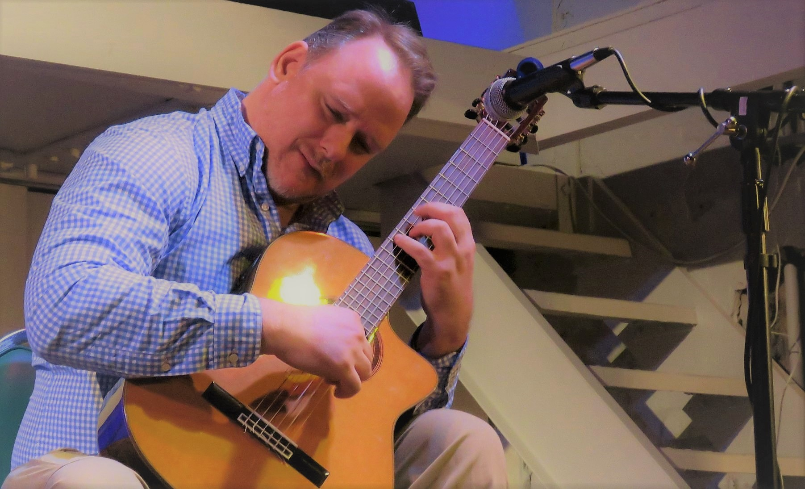

Biography

Hey I am Matson Adams. My story of music began when I picked up guitar at age 14, played my first cord and immediately fell in love with it. I wanted to learn more about this new found passion so I continued my journey jamming with friends and playing in bands and finding anyway I could immerse my life in music. This journey lead me to the Steven Center at the School Of The Arts in North Carolina where I discovered my love of classical guitar. During that time I felt the desire to explore more styles of music which lead me to Max Drake, well-known blues guitar player who has played all over the United States and Europe. Max deepened my interest in blues, which inspire me to learn Jazz which lead me to L.H. Dickert at Winthrop University. L.H. inspired me on my lifelong journey with Jazz which I am forever grateful for!
I have also been very thankful to discover my passion for teaching through music. To help people reach their dream of expressing themselves through music is truly an honor and one of the most important things to me. I am fortunate to teach for close to 20 years at Rimfire Music Studio in Statesville NC and I also teach at Mitchell Community College Community Outreach Program and have taught at Cornerstone Christian Academy.
I am so thankful for the opportunities to be able to share my love of music with the students. Music is one of the most important and beautiful things in life and I am so grateful be able to be a musician and teacher!
Courses